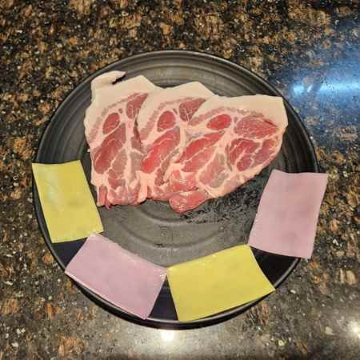
창호지목살 150g
최고등급 마블고기를 3mm로 저며 전주의 창호지 같은 질감을 표현한 목살. 떡쌈과 싸먹을 수 있도록 고안했습니다.
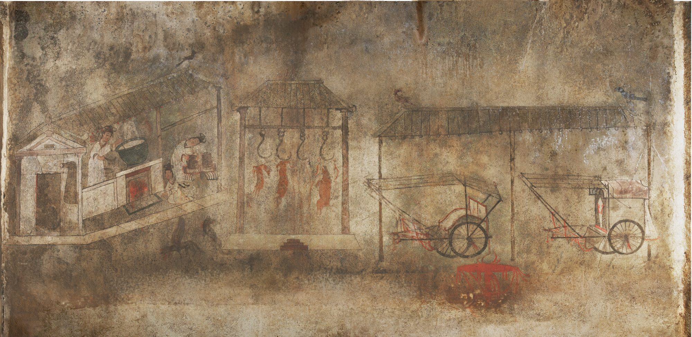
구이의 원형 AD 357년 고구려 안악3호분 부엌 벽화
불 위의 맛
문지를수록 한지가 그을리며, AD 357년 고구려 부엌 벽화가 떠오릅니다.
그림: 안악3호분 부엌 벽화(AD 357년), 공개 도메인
AD 357년 고구려 안악 3호분의 벽화에는 당시 사람들의 부엌과 음식문화가 기록되어 있습니다. 맥적은 고대 문헌에 등장하는 고기구이의 이름입니다. 맥적은 이러한 우리 고기구이의 역사에서 영감을 받아, 전통의 맛을 현대적인 조리기술로 재해석합니다.
이규진·조미숙(2021), 『불고기: 한국 고기구이의 문화사』
박유미(2013), 「맥적(貊炙)의 요리법과 연원」
맥적(貊炙)은 고대 문헌에 기록된 고기구이의 이름입니다. 우리는 이 오랜 식문화에서 영감을 받아 숙성과 숯불, 현대적인 조리기술을 결합해 전통 고기구이의 가치를 새롭게 이어갑니다.
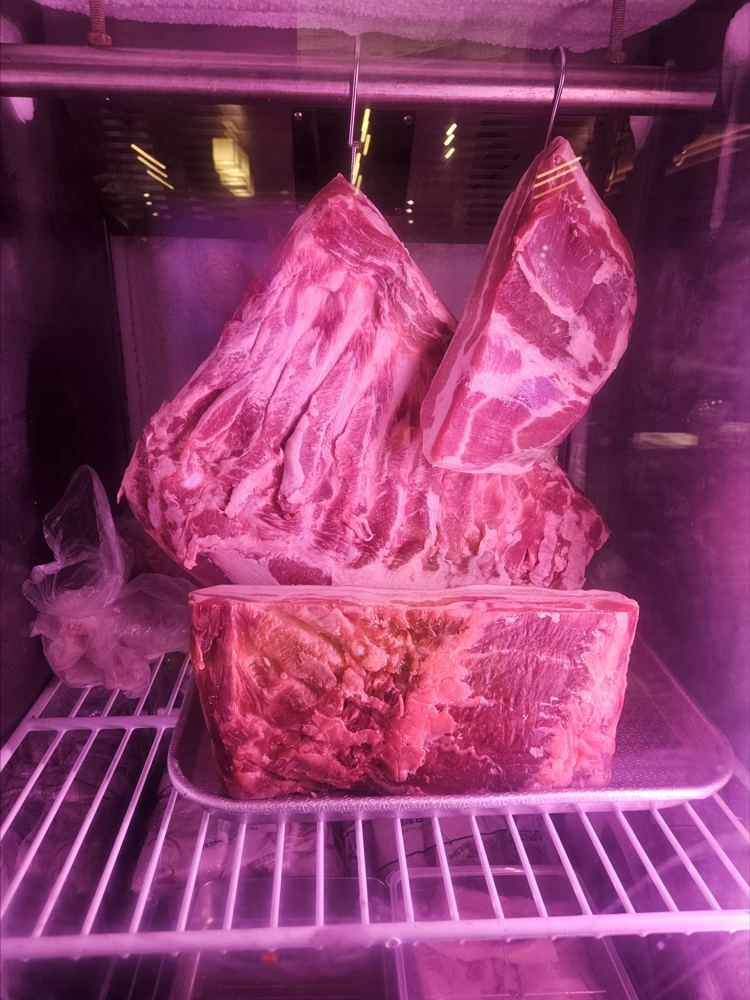
AD 357년 고구려의 고기 보관문화 오늘 현대의 숙성·보관 기술
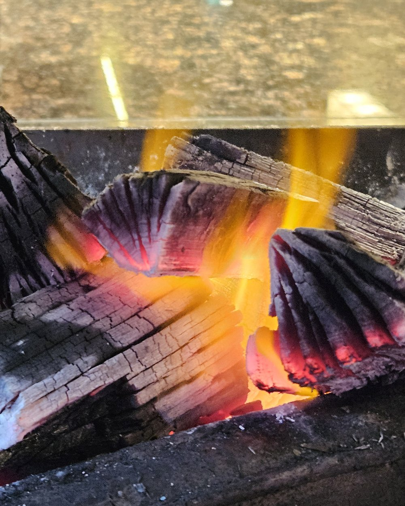
AD 357년 고구려 부엌의 불 오늘 현대 맥적의 참숯 직화구이
특허출원
출원번호 10-2026-0222478 · 출원일
(다단계 마이야르 가열을 이용한 돼지고기 조리방법)
전통의 불을 과학으로 완성하다.
맥적은 최상의 돼지고기 맛을 위해 온도와 시간, 조리 순서를 연구했습니다. 주물팬의 풍미, 참숯의 불향, 돌판의 식감까지. 전통 고기구이를 현대적 기술로 완성한 맥적만의 조리기법입니다.
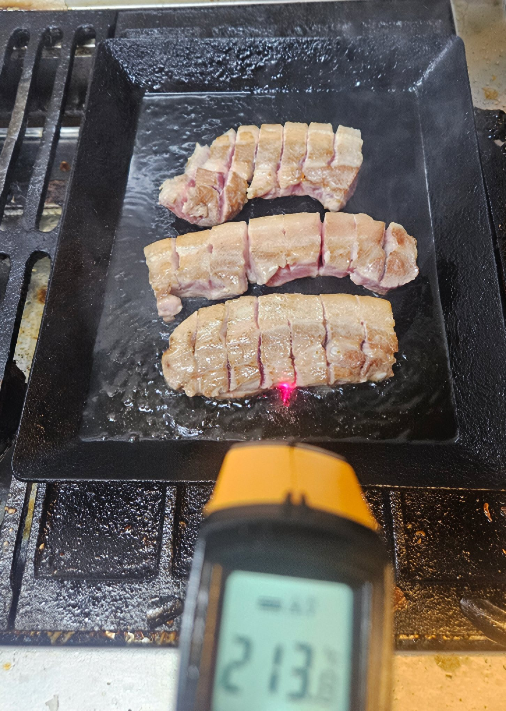
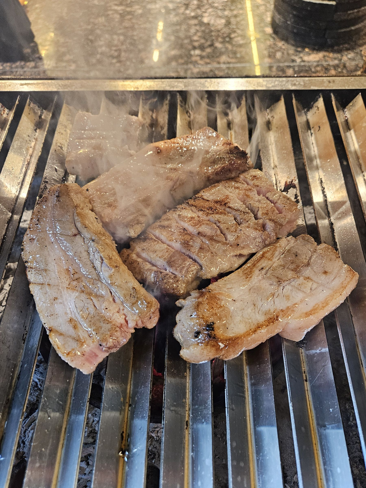
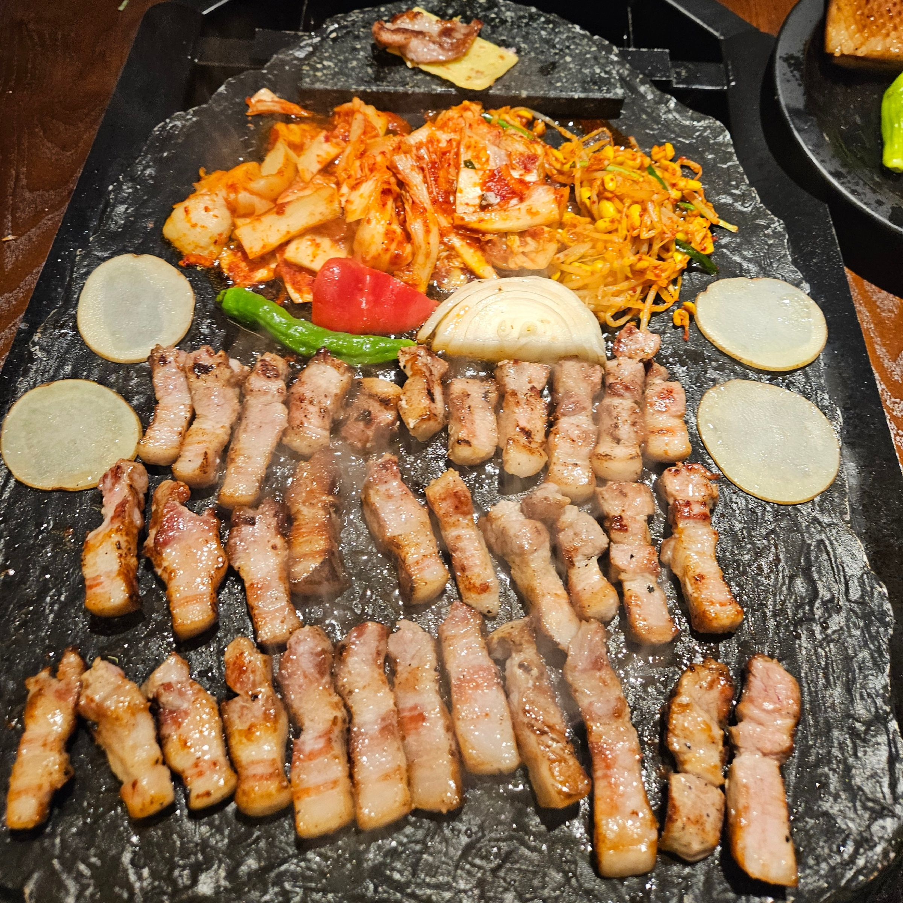
1주물팬
표면 갈변과 풍미형성
2참숯 직화
직화 특유의 향 형성 그릴에 초벌하는 모습을 라이브 키친에서 직관할 수 있습니다.
3불판
균일한 가열과 최종 마이야르 형성
12년의 군 생활, 그리고 3년의 고기구이 연구.
대한민국 육군 장교로서 12년간 복무하며 JSA(공동경비구역)에서 원칙과 책임을 배운 김현우 대표. 전역 후 전주에서 새로운 도전을 시작하며, 맥적만의 차별화된 맛을 위해 3년간 돼지고기의 숙성과 가열 온도, 조리기술을 연구했습니다. 그 결과, ‘다단계 마이야르 고기구이 기법’을 개발하여 2026년 11월 9일 특허출원했습니다. 군인으로서 지켜온 원칙과 책임, 이제는 한 점의 고기에 담아냅니다.
전통은 계승하고, 맛은 연구하며, 기술로 완성합니다.
맥적(貊炙) 대표 김현우
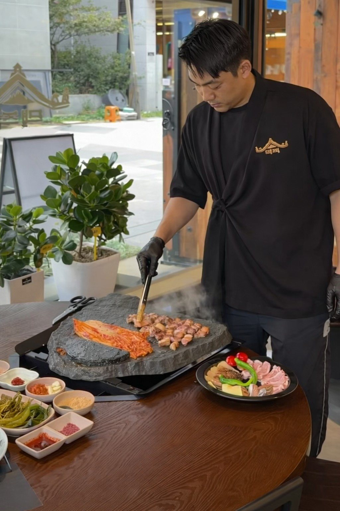
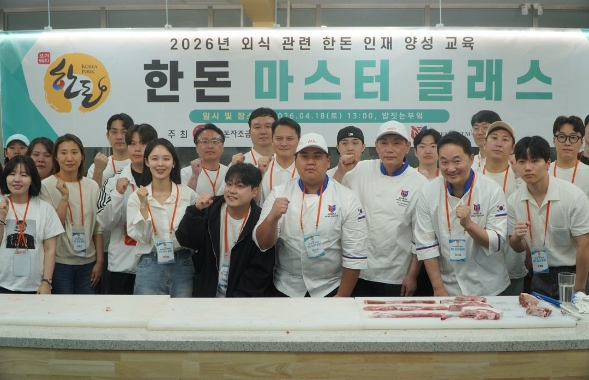
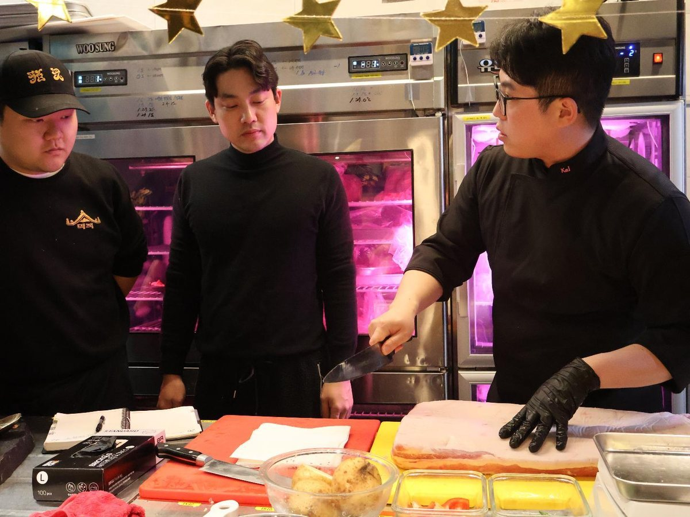
맥적은 전통 돼지고기 구이의 현대화를 시작으로 외식사업, 가정간편식 개발, 식품 유통 및 브랜드 확장을 추진하는 전주 기반 한식 BBQ 브랜드입니다.
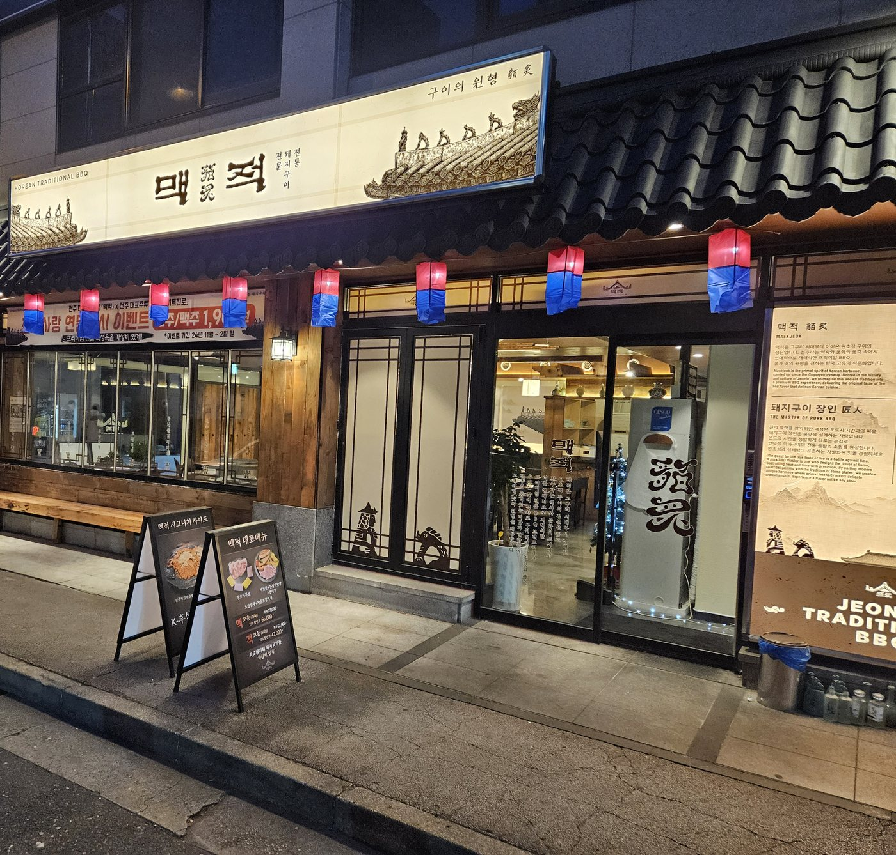
운영중
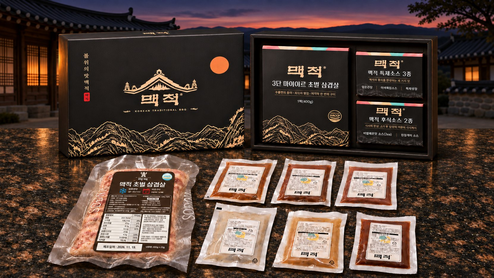
개발완료
전통구이기술을 활용한 가정간편식 제품개발 및 상품화
진행
전문육가공업체와 협력한 돼지고기 가공제품 개발 및 유통
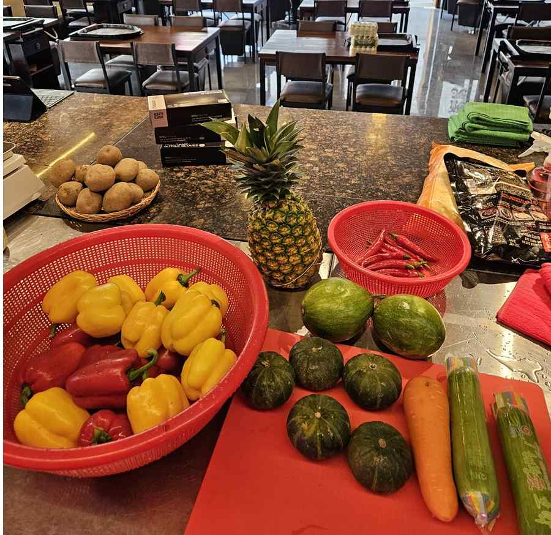
진행
HACCP 인증 제조시설과 OEM 협력을 통한 소스 가공식품 생산 추진
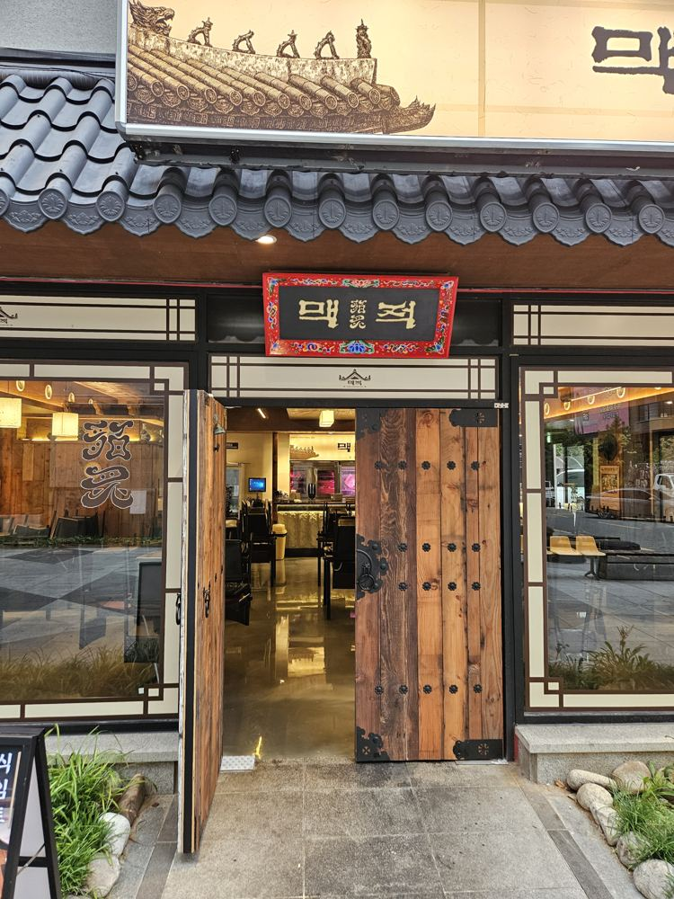
준비
직영점 확대 및 표준화된 운영 시스템을 기반으로 가맹사업
개발완료
전통의 구이 방식, 현대의 식탁으로
불위의 맛, 맥적. 전주의 직화구이를 집에서도.
맥적 BBQ 패키지는 전통 고기구이의 풍미를 가정에서도 간편하게 경험할 수 있도록 개발한 프리미엄 가정식 BBQ 제품입니다.
맥적만의 3단 마이야르 조리기술로 초벌한 한돈 삼겹살에 전통 장류를 활용한 곁들임 소스와 후식 소스를 더해, 집에서도 맥적의 한 상을 완성할 수 있도록 구성했습니다.
01전통돼지구이
주물팬 시어링과 참숯 직화로 고기의 풍미를 끌어올리고, 가정에서는 팬으로 마지막 조리를 완성합니다.
02맥적 곁들임 소스
맥적의 고기 맛을 더욱 풍성하게 완성하는 세 가지 곁들임 소스입니다. 전통 장류를 바탕으로 고기와 조화를 이루는 다양한 풍미를 담았습니다.
03맥적 후식 패키지
고기를 즐긴 후에도 맥적의 식사 문화를 경험할 수 있도록 구성했습니다. 비빔볶음밥 소스와 된장찌개 소스로 가정에서도 든든한 한 상을 완성할 수 있습니다.
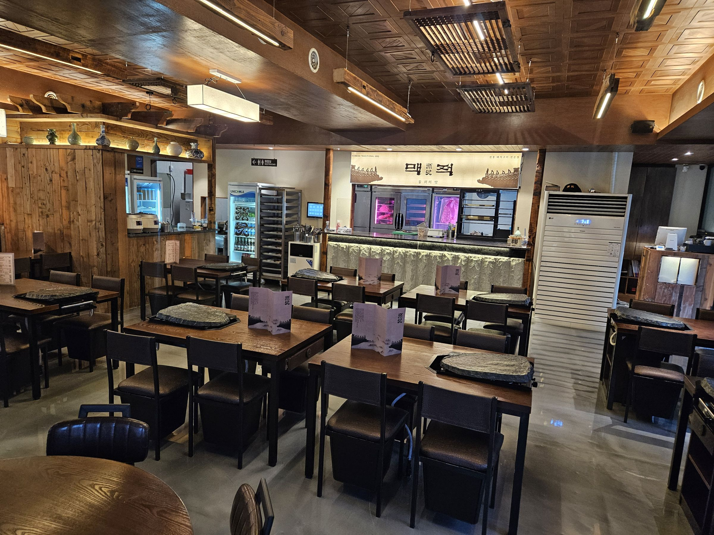
해가 저물고 청사초롱에 불이 켜지면 맥적에는 사람들이 모입니다. 하루의 피로를 내려놓고 좋은 사람들과 고기를 굽고, 술잔을 나누는 곳. 예부터 사람들이 만나 이야기를 나누던 주막처럼, 맥적은 전주의 새로운 사랑방이 되고자 합니다.
고기와 술, 좋은 사람들과 좋은 시간.
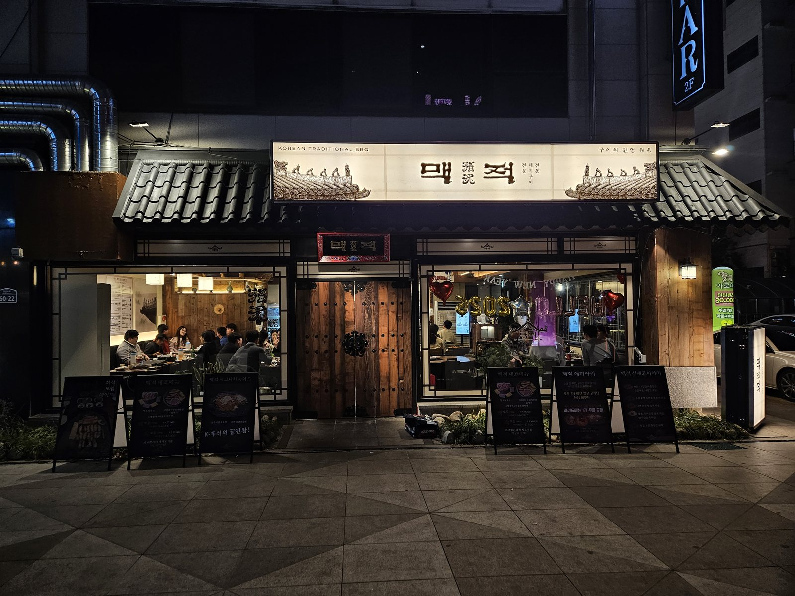
식약처
전주시 공식 관광 플랫폼 「비짓전주」 '전주의 맛 – 삼겹살' 코너
제40-2546564호, 43류 식당업
중소벤처기업부
출원번호 10-2026-0222478